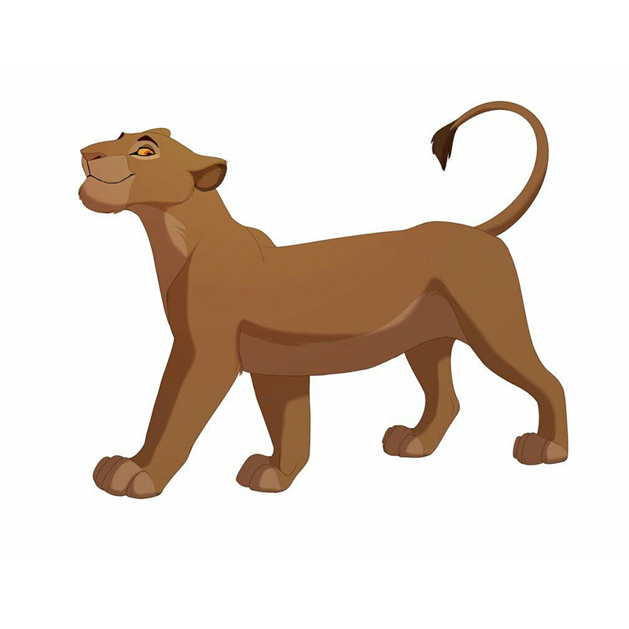
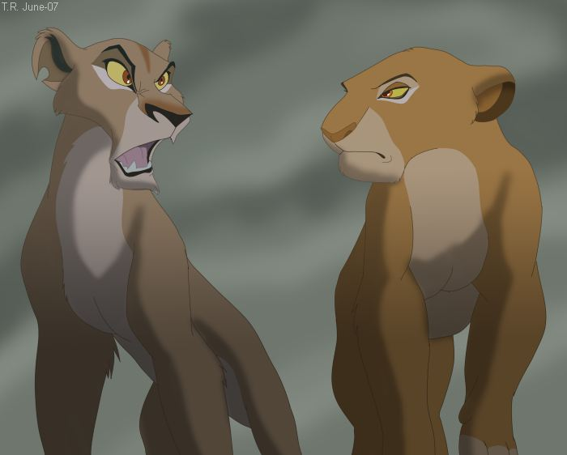

Sarabi
Navigation
Sarabi ist eine sehr warmherzige und weise Löwin, jedoch auch sehr stolz, aufrecht und gerecht. So kümmert sie sich liebevoll um ihren Gefährten und ihren Sohn und trauert sehr, als sie die beiden verloren weiß.
Auch Weitsicht und planvolles, bedächtiges Handeln liegen ihr, was sie zum Beispiel öfters im Umgang mit ihrem Sohn offenbarte.
Sarabi zeigte ihren großen Stolz mit aufrechter Körperhaltung, als Scar die Herrschaft im Geweihten Land übernahm und sie diesem unverblümt die Meinung sagte, da sie es als ungerecht empfand, wie er mit den Bewohnern des geweihten Landes umsprang.
Familie
Mufasa (Ehemann)
Scar (Schwager)
Simba (Sohn)
Nala (Schwiegertochter)
Kiara (Enkelin)
Eigenschaften
| Name | Sarabi |
| Spezies | Löwe |
| Geschlecht | Weiblich |
| Mähne | Keine |
| Typ des Gestaltes | Positiv |
| Charakter | Stark, weise, kühn, gutmütig, fürsorglich, liebend |
| Aussehen | Eine große schlanke Löwin, kreme-weißes Fell, beige Bauch und Pfoten, rot-braune Nase, rubinrote Augen |
| Ziel | Die Familie beschützen und unterstützen |
| Kräfte und Fähigkeiten | Körperstärke |
| Waffe | Fangzähne und Krallen |
| Schicksal | Vereinigt sich mit dem nach Hause zurückgekehrten Sohn Simba wieder und empfängt ihn als einen neuen König |
Video
https://www.youtube.com/embed/fP3Ub0hf184